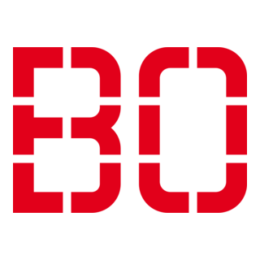

Erstelle dein Profil
Wie sollen wir dich in deinem Feed nennen?
Profil
🧑🎤
Du
@moveon_user
0Challenges
0Likes
0Streak
Abzeichen

Wähle eine Gruppe aus – die Seite passt sich sofort an.
Wie sollen wir dich in deinem Feed nennen?
Diese Infos fassen öffentlich zugängliche Empfehlungen der WHO zusammen und ersetzen keine medizinische Beratung.
Verantwortlich für den Inhalt dieser prototypischen Anwendung:
Hochschule Bochum
Fachbereich Gesundheitswissenschaften
Forschungsprojekt „MoveOn – Zielgruppengerechte Bewegungsförderung durch innovative,
digitale Gesundheitstechnologien“
Ansprechpartner:
Dr. Alina Napetschnig
Prof. Dr. Wolfgang Deiters
E-Mail:
alina.napetschnig@hs-bochum.de
wolfgang.deiters@hs-bochum.de
Diese Anwendung wurde im Rahmen eines Forschungs- und Entwicklungsprojekts erstellt und dient ausschließlich wissenschaftlichen, didaktischen und demonstrativen Zwecken.
Stand: Juli 2026
Diese prototypische HTML-Anwendung wurde so konzipiert, dass innerhalb der Anwendung keine personenbezogenen Daten erhoben, gespeichert oder dauerhaft verarbeitet werden.
Eine Identifizierung einzelner Nutzerinnen oder Nutzer über diese Anwendung ist nicht vorgesehen.
Sofern die Anwendung über einen Webserver bereitgestellt wird, können technisch notwendige Server-Logdaten (z. B. IP-Adresse, Datum, Uhrzeit oder Browsertyp) durch den jeweiligen Hosting-Anbieter verarbeitet werden. Diese Verarbeitung erfolgt außerhalb der Anwendung selbst und liegt in der Verantwortung des Hosting-Anbieters.
Die Anwendung verwendet keine Tracking-, Analyse- oder Marketingdienste (z. B. Google Analytics, Meta Pixel oder vergleichbare Technologien).
Diese Anwendung ist ein nicht-medizinischer, wissenschaftlicher Demonstrator im Rahmen des Forschungsprojekts MoveOn der Hochschule Bochum. Sie ersetzt keine ärztliche, physiotherapeutische oder sonstige fachliche Beratung.
Vor der Nutzung bitte beachten:
Für die Inhalte wird keine Haftung hinsichtlich Vollständigkeit, Aktualität oder gesundheitlicher Folgen der Nutzung übernommen. Die Nutzung erfolgt auf eigene Verantwortung.
Bei Fragen, Anregungen oder Feedback zum Forschungsprojekt MoveOn erreichen Sie uns unter:
Hochschule Bochum
Fachbereich Gesundheitswissenschaften
Forschungsprojekt „MoveOn – Zielgruppengerechte Bewegungsförderung durch innovative,
digitale Gesundheitstechnologien“
Dr. Alina Napetschnig
E-Mail: alina.napetschnig@hs-bochum.de
Prof. Dr. Wolfgang Deiters
E-Mail: wolfgang.deiters@hs-bochum.de
Regelmäßige Bewegung unterstützt Jugendliche in einer entscheidenden Entwicklungsphase:
Für Jugendliche im Alter von 13–17 Jahren empfiehlt die WHO:
MoveOn übersetzt diese Empfehlungen in kurze, motivierende Bewegungs-Missionen für zuhause, die Schule oder unterwegs:
Diese Informationen fassen allgemeine, öffentlich zugängliche Empfehlungen der WHO zusammen und ersetzen keine individuelle medizinische oder pädagogische Beratung. Bei spezifischen Fragen wenden Sie sich bitte an eine Ärztin, einen Arzt oder eine andere Fachperson.